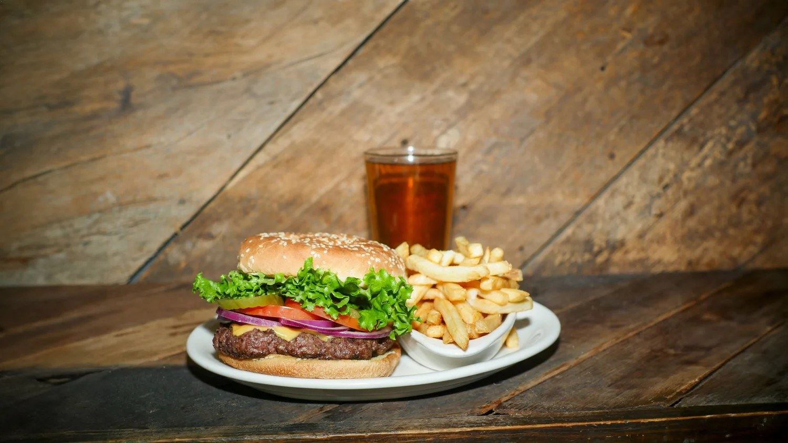

Gold Country • Highway 49 & Highway 88 • Shenandoah Valley, Amador City, Murphys & Lincoln wineries • Highway 4 & South Lake Tahoe • Plus two over the crest — Markleeville & US-395
Burgers in the Gold Country

The burger at Rojo's Tavern, South Lake Tahoe — Photo: Rojo's Tavern
Forty-four real stops: thirty along the Mother Lode and Highway 88, from Nevada City in the north to Jamestown in the south and west to Webster's in the Lockeford / Clements area — plus three on Highway 4 (Giant Burger in Arnold, The Lube Room Saloon in Dorrington and Lake Alpine Lodge), nine in South Lake Tahoe — running from a 1961 drive-in to a 24-hour casino-corridor bar just over the line in Stateline, Nevada — and two over the Sierra crest: Cutthroat Tavern in Markleeville and Walker Burger on US-395. Diners that have served a signature burger since the 1950s, a tiny hut on Highway 88, two stage stops from the 1850s and '60s — Cook's and Ham's — still frying burgers further up the same road, pub burgers on Sutter Creek's Main Street, a country store in Volcano grilling burgers since the Gold Rush era, a 1950s diner at the Plymouth roundabout, the Sonora grill people drive back for — plus five winery kitchens with a burger actually on the menu: Helwig and Villa Toscano in the Shenandoah Valley, The End of Nowhere in Amador City, Ironstone in Murphys, and Wise Villa in Lincoln. Every place below was verified from current listings in November 2026. Two honest exceptions on timing: Walker Burger and Lake Alpine Lodge are both seasonal and closed for the season as of late November — they're spring-through-fall stops. Prices and hours change — call ahead on a road day.
The Mother LodeCarson Pass roadOver the crest
✎ Draft v1 — Nov 22, 2026 · corrected & updated — Webster's AND Walker both in, five winery burgers in, Cutthroat + South Lake Tahoe + Highway 4 added, Cook's & Ham's Stations added, four more South Lake Tahoe stops added, Lube Room Saloon added44 stops • 10 countiesNot yet published to the Gazette
Visited 0 of 44
Tap “✓ Visited” on any card to mark it — marks save on this device only.
39Verified stops
1852Oldest store — Sizemore, Volcano
49·88·4·89·395Highways covered
9Roadside stands
Open maps in:
Showing all 44 stops
Your search & filter choices are remembered on this device — reload the page and you'll land right back here.
Price $–$$$$ · $ under $12 · $$ $12–17 · $$$ $18–24 · $$$$ $25+. Checked November 2026.
Photo: Travels with Elle
Auburn · Placer CountyMarket & grill
Ikeda's California Country Market
$$$$Pricey · 3 of 4
Order thisFamous Big Burger — or the Tasty Burger
The I-80 pit stop generations make on the way to Tahoe: a family-run fruit stand, pie shop and burger counter in one. Patties are never-frozen American beef with a house herb-and-spice blend; the Famous Big Burger stacks two patties on a French roll.
Why stop: Burger + a slice of homemade pie + produce for the cabin, all in one parking lot.
Old Town Auburn's tavern burger: a half-pound of certified ground chuck with lettuce, tomato and onion on a sweet Italian roll with Russian dressing. Sit-down, full tavern menu, and an easy walk around Old Town after.
Why stop: The proper sit-down burger in historic Old Town, not a drive-through.
Grass Valley's beloved brunch café does burgers its own way: all-natural patties with spring mix, tomato and Pine Street sauce, alongside genuinely good vegetarian options — the Smoldering Pine (tofu & veggie bacon) and the house Nutburger.
Why stop: Best pick in this guide for a mixed group — meat and meatless both done properly. Lunch hours only.
A Nevada City institution on Pine Street since the fondue era — triple-arched bar, live music, and char-broiled burgers done properly. Now transitioning to Sherwood Restaurant & Tavern, keeping traditional favourites on the menu.
Why stop: Dinner burger with music in one of the Gold Country's prettiest downtowns. Note the new name when you look it up.
Order thisWise Villa Signature Burger — 6 oz Angus & short-rib blend
The Placer County winery burger, from Wise Villa's own full-service restaurant in the Lincoln foothills. The Signature Burger is a 6 oz blend of California Angus beef and short rib with green goddess aïoli, white cheddar, butter lettuce, tomato and sliced onions on a toasted bun, served with fries — the menu pairs it with their Cabernet Sauvignon and Reserve Tannat. One catch: burgers and sandwiches aren't served after 5 PM, so make it a lunch or an early dinner.
Why stop: A proper winery-restaurant burger on the west side of the foothills — an easy add to an Auburn or Lincoln run, and the northernmost winery burger in the guide.
Winery burgerMon–Tue 11–3 · Wed & Sun 11–5 · Thu–Sat 11–8No burgers after 5 PMWine pairing on menu
A small Main Street lunch spot with grass-fed burgers, garlic curly fries, sweet-potato “dollops” and thick old-fashioned milkshakes. The elk burger is the one reviewers single out — lean, flavourful, and not a gimmick.
Why stop: The most distinctive patty in the guide. Mostly lunch hours — plan for midday.
Retro roadside stand on Broadway — burgers, dogs, chili, fries and shakes at old-school prices, with a covered patio. Patrons call the shakes the best around; the menu runs from a simple burger to a triple.
Why stop: Pure roadside Americana, five minutes off Highway 50, no fuss.
Pine Grove · Amador County · Hwy 88Roadside hut ★ Local legend
88 Giant Burgers To Go
$$$$Budget · 1 of 4
Order this88 Burger / Double Cheeseburger — and the 88 Slam
A hut so small you could miss it — and a name that tells the truth. Fresh ⅓-lb patties made daily, cooked to order at the window on Highway 88. The 88 Slam puts grilled chicken, onions and jalapeños inside a grilled-cheese sandwich; the Western Slam adds BBQ sauce. One order of fries feeds three.
Why stop: The single most talked-about burger on the way to Kirkwood. Three outdoor tables, no indoor seating, no restrooms — plan accordingly.
Pioneer · Amador County · Hwy 88Roadside burger stand
Kennedy's Pioneer Burger
$$$$Moderate · 2 of 4
Order thisPioneer Burger — or the Boujee Blue / Mushroom Swiss
The Highway 88 stop locals just call “Pioneer Burger.” A small, locally owned roadside place in Pioneer serving generous, juicy burgers made with meat from a local butcher, on homemade bread, with hand-cut fries and shakes. The lineup runs from bacon cheeseburger and Western bacon to jalapeño, chili cheese, mushroom Swiss and the Boujee Blue — big, messy, and best eaten there, not in the car.
Why stop: The other essential Highway 88 burger — pair it with 88 Giant Burgers in Pine Grove for a proper 88 taste-off on the way up the hill. Call ahead if you're in a hurry; it gets busy.
Also known as Pioneer BurgerHand-cut friesOpen daily ~10:30–8Caramel shake
Pioneer · Amador County · Hwy 88Saloon, dining & store ★ Stage stop since 1863
Cook's Station
$$$$Budget · 1 of 4
Order thisClassic Cheeseburger — hand-formed patty · lunch only
Three miles east of Pioneer at about 5,000 feet, Cook's has been a stop on this road since 1863 — stage stop, toll house and Pony Express stop on the Amador–Nevada Wagon Road — and it's so far out that it generates its own power. Breakfast is the headliner, but lunch is the burger menu: hand-formed patties cooked on a well-seasoned grill — the classic cheeseburger, mushroom-Swiss and bacon-blue specialty burgers, a Patty Melt, and named burgers reviewers single out, “The Eric Burger” and “John's Burger”; one lunch review counted 25 burgers on the menu. The catch: burgers are lunch only — breakfast runs to about 11 AM/noon, so time your arrival after that. There's a saloon, a general store and an RV park attached. One honesty note: no priced menu is published online, so the $ band rests on Yelp's published price level, not a read menu — no specific burger price is printed here.
Why stop: The Highway 88 burger run now climbs in steps — Kennedy's in Pioneer, then Cook's, then Ham's Station — and Cook's is the historic middle rung: an 1863 stage stop still frying burgers at 5,000 feet, open seven days a week, year-round.
Burgers lunch only — from ~11 AMOpen daily 7–2 · Fri–Sun to 3Stage stop since 1863Generates its own powerRV park next door
Pioneer · Amador County · Hwy 88Restaurant, bar & lodging ★ Way station since 1855
Ham's Station
Order thisThe Ham's Burger — hand-pressed
The top of the Highway 88 burger climb, at about 6,000 feet east of Cook's: a roadside bar and grill with a deck, plus lodging and a small store, on a site that has served this road since 1855 — Foster's Trading Post first, then Smith's Hotel, then bought by Alonzo C. Ham, whose name it still carries; a 2018 historical marker out front tells the toll-and-way-station story. It closed in 2017 and was revived under new ownership, and the burgers are current, not a ghost menu: the hand-pressed Ham's Burger, the Wilderness Burger and an open-face Chili Cheese Burger, with reviewers eating them as recently as November 2025. Summer brings BBQ nights. No price band here on purpose: the only price on record comes from a clearly outdated menu, so the guide won't print a number it can't stand behind.
Why stop: Thu–Sun only, so time the run — Kennedy's → Cook's → Ham's makes a full Highway 88 burger ladder, and Ham's deck, burger in hand and a Bloody Mary if you're so inclined, is the payoff at 6,000 feet.
Thu–Sun onlyThu 8:30–4 · Fri–Sun 8:30–6Way station since 1855Deck at 6,000 ftSummer BBQ nights
Jackson's icon at the junction of Highways 49 and 88 — independent, not the Mel's franchise. The Moo Burger stacks two quarter-pound patties; regulars add onion rings, chili cheese fries and a strawberry or peanut-butter shake, then finish with homemade pie. Huge salad bar, opens at 5 AM daily.
Why stop: History you can eat — the oldest signature burger in this guide, and the natural meet-up point in Amador.
Volcano · Amador CountyCountry store & restaurant ★ Since 1852
Sizemore Country Store
$$$$Budget · 1 of 4
Order thisDouble Cheeseburger — add bacon & BBQ sauce
California's oldest continuously operated store, serving Volcano since 1852 — part general store, part restaurant, all Gold Country. The famous burgers are made to order and cooked over a brick-lined grill; the double cheeseburger is the one reviewers call the best in Amador County, huge enough to share. Browse the vintage-lined shelves, then take your burger to the garden patio with a local wine or an Amador Brewing beer on tap.
Why stop: A burger inside a living piece of 1852 history — worth the detour to Volcano on its own, and reliably open seven days when much of the town is closed.
Main Street Sutter Creek's place to “pig out”: full bar, big pours, and over-the-top pub burgers. The maximal version stacks two 8-oz patties with pork-belly bacon, sautéed mushrooms, garlic aioli and smoked Gouda, with garlic-parm fries. Single patty is plenty for most people.
Why stop: The biggest, most indulgent burger in Amador County — and the beef itself gets the raves, even plain.
Plymouth · Amador County · Hwy 491950s diner ★ At the roundabout
Marlene & Glen's Diner — the Dead Fly Diner
$$$$Moderate · 2 of 4
Order thisJohnny's Western Burger — ⅓ lb charbroiled
You were right on both names: this is Marlene & Glen's, universally known as the Dead Fly Diner, right at the Plymouth roundabout where Highway 49 meets Shenandoah Road — the gateway to Amador wine country. A proper 1950s diner inside — black-and-red checkered floor, red booths, counter stools — with a huge homemade comfort-food menu, breakfast all day, and a full bar. It was even named California's best diner in a national roundup. The burger to get is Johnny's Western Burger, on the Amador Burger Route: a ⅓-lb choice beef patty charbroiled to order with lettuce, tomato, pickle, onion, bacon, cheese, onion rings and BBQ sauce, with fries — and soft serve to finish, which locals call the best around.
Why stop: You can't miss it — or pass it. It's the diner on the roundabout you drive around on every Plymouth run, and the natural start to a Shenandoah Valley wine day.
At the roundaboutWed–Sun 7:30–2:30Fri dinner 4:30–8Soft serveFull bar
Amador County's new casino, opened in February 2026 on Highway 49 — and its Old Roots Bar serves a proper cheeseburger: cheddar, aioli, pickles, shredded iceberg, tomato and red onion on a sesame seed bun, with a choice of side, for $18. Get the garlic fries with it.
Why stop: Dave's tip — a decent burger at the newest kitchen in the county, with the farm-to-fork Stonecreek Kitchen next door and an outdoor stage out back.
Plymouth · Amador County · Shenandoah ValleyWinery kitchen ★
The Kitchen at Helwig Winery
$$$$Moderate · 2 of 4
Order thisTHE DAVE — 6 oz American Wagyu — or THE NANCY (veggie)
You called it — Helwig does have a decent burger, and it's the winery's signature. The Kitchen at Helwig, across from the Pavilion, lists THE DAVE and THE NANCY as its “always available” signature burgers. On the Amador Burger Route, THE DAVE is detailed as a 6 oz American Wagyu beef patty with bacon onion jam, lettuce, tomato, smoked Gouda and roasted garlic mayo on a grilled bun, served with seasoned fries. Lunch is first come, first served, with sweeping Shenandoah Valley views and Helwig wine by the glass to pair with it.
Why stop: The winery burger in this guide that's a real, regular menu item — not a food-truck day. Plan it as a wine-country lunch, not a quick roadside stop.
Winery burgerFri–Mon 11–421+ only — whole facilityAmador Burger RouteVeggie option
Plymouth · Amador County · Shenandoah ValleyWinery bistro ★
Villa Toscano Winery — The Bistro
$$$$Moderate · 2 of 4
Order thisShenandoah Gourmet Burger — ½ lb ground chuck
The second Shenandoah Valley winery burger, a few minutes from Helwig on Shenandoah Road. Villa Toscano's Bistro serves the Shenandoah Gourmet Burger: a half pound of ground chuck with white cheddar, petite greens, tomato, garlic herb aioli and BBQ sauce — add applewood-smoked bacon if you're doing it properly. Sandwiches come with your choice of French fries, sweet apple slaw, a bag of chips or a mixed green salad, and the bistro serves lunch daily in the winery's Italian-style piazza setting.
Why stop: It makes a Shenandoah Valley winery-burger double-header possible — Helwig's Dave and Villa Toscano's Gourmet Burger on the same wine-country lunch run.
Order thisEON Special Grind, House style — $16 · 6.5 oz
Current special · On the board todayRed, White & Bleu Burger — $16: EON patty, bacon, house bleu cheese sauce, red onions, toasted bun. There's a veggie version too — Red, White & Bleu Veggie with a Beyond patty, also $16.
Amador City's little winery kitchen — in the smallest town in Amador County — builds every burger around the EON Special Grind: a 6.5 oz secret blend of Angus beef, lamb, bison and American Wagyu ($16), cooked over mesquite charcoal to medium-rare unless you say otherwise. Order it House style — “The burger that started it all!” — with caramelized onions, Dijon aioli and white American cheese on a toasted bun. Winemaker Chris Walsh grills them himself most days, and it's the other winery stop on Visit Amador's official Burger Route, alongside Helwig.
Why stop: A four-meat mesquite burger grilled by the winemaker on Amador City's Main Street — weekends only, so plan the Sutter Creek / Amador City run for Friday through Sunday. Come for a tasting flight and stay for the burger: “Wine + Burgers” is literally what's on the sidewalk sign.
On the menu — from Dave's photos at the table, Nov 22, 2026
Choose your patty
EON Special Grind — $16. 6.5 oz secret blend of Angus beef, lamb, bison and American Wagyu.
Rendic Ranch Regenerative Beef — $20. 6.5 oz of local, 100% grass-fed and finished beef, raised just 2 miles away in Amador City.
Beyond Veggie Burger — $16. The all-plant burger — “tastes a lot better grilled on mesquite. Just trust us.”
Choose your style
House — “The burger that started it all!” Caramelized onions, Dijon aioli, white American cheese, toasted bun.
Spicy — house spicy aioli made with seven varieties of chiles roasted on site, plus sweet peppers and white American cheese.
Specialty Tinned Fish — $14, served with chips + pickles. Your choice of: Maruxaina Razor Clams in Olive Oil, Minnow Mussels in Escabeche, Ekone Habanero Smoked Oysters, Ekone Wild Octopus.
Simple Salad — $5 · Himalayan Salt Chips — $4 · Soda $3 · Sparkling water $3.
Wine flight — $10: one pour each of five current-release wines — 2018 #1 Crush, Zinfandel Rosé ($8/30) · 2025 A Space Oddity, Verdejo ($8/30) · 2025 Dear Mr. Fantasy, Counoise ($10/36) · 2023 Perfect Disguise, Zinfandel ($9/34) · 2024 Stroke of Luck, Primitivo ($11/40).
All burgers are cooked over mesquite charcoal to medium-rare unless otherwise specified. Reservations: (209) 267-8345. Menu details verified from Dave's own photos of the printed menu, the special card and the sidewalk sign, taken at End of Nowhere on Nov 22, 2026 — the printed menu supersedes the June menu photo as the freshest source.
Winery burgerFri–Sat 12–8 · Sun 12–6Mesquite charcoal · Medium-rareAmador Burger RouteSpecial: Red, White & Bleu
A Gold Rush general store — built in 1850 in Lancha Plana, then moved to this spot piece by piece — with a working saloon and a kitchen turning out Mexican and American plates. The Buena Vista Burger is the regulars' order; Fridays belong to the famous fresh tri-tip sandwiches.
Why stop: Dave's tip — a good burger on the back road between Ione and Camanche, in a store that has stood since 1850, plaques and all.
Lockeford / Clements · San Joaquin County · Hwy 88Drive-in ★ Since 1967
Webster's Country Burger Drive-In
$$$$Budget · 1 of 4
Order thisWestern Wrangler — or a classic Webster's burger + chili cheese fries & a shake
A different place from Walker Burger over the crest — this is Webster's, the old-school country drive-in on Highway 88 at the Lockeford / Clements end of the guide (postal address Clements), going since 1967. Order at the window or drive-thru and eat at the outdoor tables: big, straightforward burgers — reviewers single out the huge Western Wrangler — plus chili cheese fries and dogs, tater tots, shakes and home-brewed root beer. It's the western anchor of the Highway 88 stops in this guide, the mirror image of 88 Giant Burgers and Pioneer Burger up the hill.
Why stop: The Highway 88 classic you've driven past for years — a proper independent drive-in, not a chain, and an easy stop on the way to or from Lodi and the valley.
Since 1967Tue–Sun 10–8 · Closed MonDrive-thruShakes & root beerOutdoor tables
Order thisPastrami Burger Combo — or test the 5-Patty Hamburger
Big-menu, budget-friendly burger joint on South Main with drive-thru and outdoor seating: avocado burgers, jalapeño burgers, pastrami burgers, and a five-patty hamburger for the committed. Pineapple shake is the local quirk to try.
Why stop: Fast, fresh and inexpensive in Mark Twain country — a proper road burger, not a gastropub production.
Order thisHand-crafted Burger / Cheeseburger at the Gold Leaf Bistro
The second winery burger verified from a current menu: Ironstone's own Gold Leaf Bistro page promises “hand-crafted burgers” alongside brick-oven pizzas, fish & chips and salads made to order — and its current listings name the cheeseburger. Order at the counter, then eat inside or out among the gardens at the big Murphys destination winery, home to the Heritage Museum and its 44-pound crystalline gold leaf specimen. No reservation needed for the bistro.
Why stop: A winery lunch that works as a full Murphys outing — burger, a glass of Ironstone wine, gardens and the gold museum in one stop.
Winery burgerThu 11–3 · Fri–Sat 11–4 · Sun 11–3Brick-oven pizza tooGardens & museum
Sonora · Tuolumne CountyGrill & wine bar ★ Since 1991
Diamondback Grill
$$$$Moderate · 2 of 4
Order thisDiamondback Burger — or the Bison Burger — with Killer Garlic Fries
Downtown Sonora's fixture since 1991, in a Gold Rush-era building on Washington Street. Half-pound burgers on a sesame bun — bacon-cheddar, pesto-mozzarella, Ortega-jack, black-bean chili — plus a bison burger regulars call a must, and garlic fries with their own fan club. Everything, down to dressings and compound butters, made from scratch.
Why stop: The best all-round burger dinner in the southern Gold Country — and you can pair it with a local wine.
Bison burgerKiller Garlic FriesOpen daily from 11:30
Order thisClassic Burger or Bacon Cheeseburger + a shake
“Serving burgers and shakes with a smile since 1969” at the junction of Highways 49 and 108. Burgers come with lettuce, tomato, red onion and Frosty sauce on a toasted brioche bun; shakes run to a dozen-plus flavours, and the large soft-serve cone — five stacked swirls — is the stuff of family legend on the drive to and from the cabin.
Why stop: The ritual stop. If you're passing Jamestown and don't stop, you've missed the point of the drive.
Mokelumne Hill · Calaveras CountyBreakfast & lunch diner
Angie's Place
$$$$Moderate · 2 of 4
Order this24K Gold Burger
A family diner on Highway 26 in Mokelumne Hill — breakfast served all day, homemade cakes, pies and biscuits, and a chicken-fried steak reviewers describe as the size of a manhole cover. The burger to order is the 24K Gold Burger: a half-pound patty with 24-karat gold sauce, onion rings and cheddar, $13.99.
Why stop: Dave's tip — his Mokelumne Hill stop: a comfort-food diner doing half-pound burgers and house-baked pie.
Breakfast all dayHouse-baked pies & cakesHalf-pound burgers
San Andreas's drive-in diner since the 1950s — breakfast and lunch served all day, thick shakes, and fries the locals call legendary. The Angus is a half pound of fresh ground beef with gooey cheese for $10.35, and the whole Famous Burgers board stays under $11.
Why stop: Dave's tip — 'the diner in San Andreas': the county seat's old-school drive-in, still going strong after some seventy years.
Since the 1950sLegendary friesBreakfast & lunch all day
📍 284 W St Charles St, San Andreas, CA 95249 ☎️ (209) 754-9375 · Facebook page · Open in Maps → Tue–Thu 7:30 AM–6 PM · Fri–Sat till 7 PM · Sun till 5 PM · Closed Mon
San Andreas · Calaveras CountyPanini grill & café
Crazy Eddie's Panini Grill
$$$$Budget · 1 of 4
Order thisGrilled Cheese Burger
A mom-and-pop lunch counter on St Charles St — Eddie is a culinary-school grad who makes his own sauces (the OMG Sauce, the Red Scorpion) and smoked meats, and the homemade fudge is legendary in these parts. The Grilled Cheese Burger puts an Angus patty and bacon with BBQ sauce inside a grilled cheese sandwich; the classic board stays cheap — cheeseburger $8.99, chili cheese $9.99.
Why stop: Dave's tip — a lunch-only San Andreas original: house sauces, smoked meatloaf, and fudge to take home.
The old Red Brick Saloon building at Highway 49 and Main, restored and reopened as Gooney's in early 2019 — a full bar with a billiards table, live music on weekends, and a kitchen turning out burgers on local grass-fed beef; one regular's tip calls them the best burgers in Calaveras County. The board runs a cheeseburger, a garlic burger and the jalapeño garlic burger, all with fries. Honesty note: no priced menu is published online, so the $$ band rests on listing price levels, not a read menu.
Why stop: Dave's tip — San Andreas's locals' bar: a historic saloon room, a pool table, and a grass-fed burger.
21 and overLive music weekendsLocal grass-fed beef
The guide's one exception, stated plainly: there is no burger on the Pourhouse menu — Dave wanted it in anyway. What there is: 16 rotating craft taps, a big dog-friendly beer garden with cornhole and live music on Main Street in Murphys, and a sandwich board reviewers keep coming back for — the smoked tri-tip, the Reuben, and the house's famous beer dip with warm pretzel bites. Honesty note: the $$ band rests on listing price levels, not a read menu.
Why stop: Dave's tip — Murphys' beer garden: a pint, a tri-tip sandwich, and the whole town drifting through.
Arnold · Calaveras County · Hwy 4A-frame diner ★ Since 1968
Giant Burger — Arnold
$$$$Moderate · 2 of 4
Order thisGiant Burger / Giant Cheeseburger — ⅓ lb fresh-ground
Not the Pine Grove place — this Giant Burger is the roadside A-frame on Highway 4 in Arnold, a landmark since 1968 with the carved wooden bear out front, on the way to Big Trees, Bear Valley and Lake Alpine. Patties are ⅓-lb fresh-ground; the board runs to Giant Bacon, Western, Mushroom Swiss, Pretzel and Jalapeño burgers, doubles, patty melts and hand-spun shakes. One honesty note: no full priced menu is published online, so the $$ band rests on listing price levels, not a read menu.
Why stop: The Highway 4 burger landmark — and it's year-round, the stop reviewers praise after a ski day.
Dorrington · Calaveras County · Hwy 4Saloon & grill ★ Bar since 1977
The Lube Room Saloon
$$$$Moderate · 2 of 4
Order thisLube Burger — $14.50 · or the Mega Lube Burger, $21.50
The name is literal: this building on Highway 4 at about 4,800 feet, next door to the historic 1880s Dorrington Hotel on the Ebbetts Pass Scenic Byway, was an auto garage and lube station for decades before it became a bar in 1977 — and the owners kept the name. Burgers are the draw, off the venue's own current menu: every burger comes with lettuce, tomato, onion, pickles, the house secret sauce and a side of homemade chips. The signature Lube Burger is $14.50 (add cheese +$2 — American, cheddar, pepper jack, Swiss or blue; add bacon +$4); the Mega Lube Burger is a double patty at $21.50; there's a Mushroom Swiss Lube Burger ($17.50), a Lube Patty Melt on marbled rye with grilled onions and Swiss ($16.50), a Veggie Burger ($14.50) and slider burgers on the starters menu. Inside, customer-donated memorabilia covers the beams — including a sled someone rode in on in the '80s and never reclaimed — with a pool table, a big back deck and a back lawn with a concert stage for live music. Locals call its burgers the best around — about 4.6 stars across roughly 950 Google reviews — and unlike Lake Alpine up the road, it's year-round: a standing post-snow-play stop, still running events in October 2026. Order at the bar, take a pager, bus your own table.
Why stop: The middle rung of the Highway 4 run — Giant Burger in Arnold, then the Lube Room about ten minutes east in Dorrington, then Lake Alpine — and the one that's open all winter.
Open daily from 11 AMKitchen to 8–9 PMBar later on weekendsYear-roundLive music · Back-lawn stageDog-friendly
Lake Alpine · Alpine County · Hwy 4Lodge restaurant ★ Seasonal
Lake Alpine Lodge
$$$$Pricey · 3 of 4
Order thisAlpine Burger — two smash patties, $19
The lodge restaurant on the north shore of Lake Alpine at about 7,400 feet, just east of Bear Valley — rustic cabins, a general store, boat rentals and a proper burger menu in season. The Alpine Burger is flagged a “lodge favorite” on the lodge's own 2026 menu: two smash patties with cheddar, lettuce, tomato, onion, pickle and house sauce on an oil-top bun, served with fries. The Fancy Burger ($22, with habanero bacon jam) and the Bleu Sky Burger ($19) round out the board.
Closed for the season — the kitchen's last day was September 27, 2026. Lake Alpine Lodge typically reopens around Memorial Day weekend (late May). Plan this one for a summer run up Highway 4.
Why stop: A smash burger at 7,400 feet on the lake shore — the high-country end of the Highway 4 run, worth timing a summer drive for.
Seasonal · late May–early OctAlpine Burger $19In season daily 11–8Lodge favorite
South Lake Tahoe · El Dorado CountyTavern ★ Since 1975
Rojo's Tavern
$$$$Moderate · 2 of 4
Order thisAmerican Burger — $16 · or the Alpine Burger, $17
A South Lake fixture since 1975 — ROJO is founders Rodger Wright and Joe Hansen — in a 1920s/30s building where heavyweight champ Max Baer once trained. Burgers are ⅓-lb ground sirloin: the American Burger ($16) with melted cheese, lettuce, onion, tomato and pickles, or the Alpine Burger ($17) with sour cream and sautéed mushrooms, both served with Rojo's fries and cole slaw. Rustic pinon-pine-and-granite room, voted Best Dive Bar in Tahoe, with karaoke and live music late.
Why stop: The locals' tavern burger on the South Shore — dinner first, then the bar takes over.
Since 1975Open daily 11–10Best Dive Bar 2018Live music & karaoke
South Lake Tahoe · El Dorado CountyDrive-in ★ Since 1961
Sno-Flake Drive-In
$$$$Moderate · 2 of 4
Order thisTahoe Burger — “The Local's Favorite”
The classic Tahoe drive-in, on Lake Tahoe Blvd since July 19, 1961 — turquoise stand, vintage ice-cream-cone sign, booths inside and a dog-friendly patio. The Tahoe Burger stacks sautéed mushrooms, sautéed onions and Monterey Jack on a quarter-pound patty with pickles, tomato, lettuce and special sauce on a sesame bun; there are 14-plus burger styles in all, plus the handmade milkshakes and soft serve it's famous for. Honesty note: no current priced menu is published online, so the $$ band rests on listing price levels and reviewer-reported prices.
Why stop: “Famous Burgers” since 1961 — the old-school drive-in burger of the South Shore, shake included.
Since 1961Open daily 11–8Handmade shakesDog-friendly patio
South Lake Tahoe · El Dorado CountyCharbroiled burgers ★ Opened 2024
Tahoe Bros Charbroiled Burgers
$$$$Moderate · 2 of 4
Order thisBacon Cheddar T Bros Burger — or the House Burger
The best story in Tahoe burgers right now. When Izzy's Burger Spa — a 50-year charbroiled institution — closed in fall 2023, three of its longtime cooks opened Tahoe Bros right across Highway 50 in May 2024, with a menu nearly identical to Izzy's: charbroiled, fresh never-frozen beef and locally sourced produce. The House Burger is $14.29 and most of the list sits at $14–$17.50; the most popular Bacon Cheddar T Bros Burger is $18.19 on DoorDash (delivery prices run above in-store), which puts this at the top of the $$ band. Voted among Tahoe's best in the Tahoe Daily Tribune's Best of Tahoe.
Why stop: Izzy's, continued by the cooks who made it — the charbroiled burger the South Shore refused to lose.
South Lake Tahoe · El Dorado CountyBrewpub ★ House-brewed
Cold Water Brewery & Grill
$$$$Pricey · 3 of 4
Order thisCW Burger — $21
Tahoe's all-grain brewpub: 14 of its own craft beers on tap and a scratch kitchen turning out California comfort food. The burger board is the CW Burger at $21, a BBQ Bacon Burger at $23 and a Truffle Burger at $25. Heated, dog-friendly patio and a weekday happy hour.
Why stop: The burger-and-a-house-beer stop of the South Shore list.
South Lake Tahoe · El Dorado County · Heavenly VillageBurgers & whiskey ★
California Burger Company
$$$$Top end · 4 of 4
Order thisThe Californian — $27
The Heavenly Village anchor — “Burgers. Whiskey. Music. Art.” — with 120-plus whiskeys on the back bar, daily live music and a firepit patio. Beef is 100% all-natural, fresh and never frozen, from Park Ranch in Minden, Nevada, and every burger includes a side. The flagship Californian ($27) comes with fresh avocado, tomato, spinach, red onion, California jack cheese, pesto and house-made roasted garlic aioli; the whole burger list sits at $25 and up, which makes this the guide's first $$$$ stop.
Why stop: The splurge end of the Tahoe burger range — and a genuinely distinctive signature burger.
Open daily 11–10120+ whiskeysLive musicFirepit patio
Stateline · Douglas County, NV · US-50Sports bar & burgers ★ Open 24 hours
Lucky Beaver, Bar & Burger
$$$$Pricey · 3 of 4
Order thisSignature Burger — 50-day dry-aged prime rib, $24 · or the Jackpot Steak Burger, $24
A 24/7 casino-corridor sports bar on Highway 50 in Stateline where the grill never closes — you can get a 50-day dry-aged prime-rib burger at 3 AM, with video poker at the bar. Burgers are the headline act, built on Pat LaFrieda ½-lb patties: the Signature line — Bronze (aged cheddar, caramelized onions, fried egg), Silver (Swiss, sautéed mushrooms), Gold (pepperjack, applewood bacon, garlic aioli) and Platinum (American cheese, Thousand Island, caramelized onions) — runs $24, and the Famous Steak Burgers run $19–24, from the Jackpot ($24, with bacon, fried egg, a beer-battered onion ring, avocado, ortega chiles, BBQ sauce and two cheeses) and Stack the Deck ($22) down to the Hot Hand, Gambler, Gold Rush, Royal Flush and Black Jack at $19. Not a national chain: an independently owned two-location Nevada group, in Stateline since 2012 with a Reno spot since 2014, and a repeat “Best Burger” winner in Northern Nevada.
Why stop: The only stop in the guide that never closes — the late-night, after-the-casino, middle-of-the-night burger, done properly.
Open 24 hoursSince 2012Pat LaFrieda beef50-day dry-agedNevada side of the lake
A cabin-style burger stand under the pines on Emerald Bay Road, right by the Camp Richardson turnoff — a standalone spot next to the resort, not the resort's own dining room. Burgers are the whole concept (“best and largest burgers at the lake”): handmade ½-lb patties, led by the Heavenly Burger, plus the Smokehouse (bacon, cheddar, grilled onions, BBQ sauce), El Camino, Jiffy, Santa Fe and Hangover Helper, an elk burger, and the cult pesto fries and garlic fries. Local and independent since 2012 — and not the San Diego chain of the same name, whatever the aggregators link. It runs year-round on a reduced shoulder-season schedule, roughly Thu–Mon 11 AM–6/7 PM and closed Tue–Wed. One honesty note: no priced menu could be verified, so the $$ band rests on October 2026 review and local-guide evidence putting burgers at roughly $10–15 — no specific price is printed here.
Why stop: The post-beach, post-Emerald Bay burger on Highway 89 — big handmade patties under the pines since 2012.
Thu–Mon · Closed Tue–WedHandmade ½-lb pattiesElk burgerPesto & garlic friesNot the San Diego chain
South Lake Tahoe · El Dorado County · By the “Y”Café & diner ★ Since 2002
Bert's Café
Order thisMountain Burger — from the Handmade Burgers lunch menu
A true locals' diner by the “Y,” family-run since 2002, where nearly everything — hollandaise, gravy, sausage, and the burger patties — is made from scratch every morning, and Bert himself still cruises through pouring coffee. Breakfast is the headline, but the burgers are a deliberate specialty, not an afterthought: the lunch menu carries a dedicated “Handmade Burgers” section of fresh hand-pressed ½-lb patties, and the Mountain Burger — photographed open-faced with bacon and an onion ring — sits on the café's own “World Class Favorites” list. Two honest flags: it closes at 2 PM, so this is a lunch play, and no current burger price could be verified — Bert's own menu doesn't publish one in readable form — so, like Ham's Station, it carries no price band rather than a guessed number.
Why stop: The scratch-kitchen diner burger on the South Shore — hand-pressed that morning, but only if you get there before 2.
Open daily 7 AM–2 PMCloses at 2 PM — lunch onlyHand-pressed ½-lb pattiesScratch kitchenFamily-run since 2002
South Lake Tahoe · El Dorado County · Lake Tahoe AirportGrill & golf simulators ★ Opened 2025
Flight Deck Grill & Golf Club
$$$$Pricey · 3 of 4
Order thisFlightDeckBurg — $22 · or the Bacon Swiss Burger, $21
First, the correction the map pin needs: this is at Lake Tahoe Airport, not the golf course — the “Golf Club” is its indoor Full Swing golf simulators, and the deck overlooks the runway. Opened in summer 2025 and local and independent, it serves seasoned ½-lb Overland beef patties with waffle fries: a Plain Burger at $18, a Bacon Swiss at $21 (bacon, Swiss, caramelized onion, garlic avocado aioli, brioche), a Mediterranean at $22 (herb feta spread, tzatziki, ciabatta) and the house FlightDeckBurg at $22 — cheddar, heirloom tomato, avocado and spicy Vaquero chile morita on brioche — all off the current Toast ordering menu, updated October 5, 2026. It even headlined a $25 burger-and-beer special for South Lake Tahoe Restaurant Week in November 2026.
Why stop: A bacon cheeseburger on a deck on the airport tarmac, watching private jets and helicopters come and go, then a round on the simulators — locals call it Tahoe's most unusual place to eat.
At the airport — not the golf courseMon–Sat 11–9 · Sun 10–9Runway-view deckGolf simulatorsOpened 2025
★ Over the crest — east-side stop · Hwy 89 · Monitor Pass country · Not on the Hwy 49/88 run
Markleeville · Alpine County · Hwy 89Tavern ★ Since 1862
Cutthroat Tavern
$$$$Pricey · 3 of 4
Order thisCutthroat Tavern Burger — $18
The place you remember as Cutthroat Brewing Company is open again — reopened under new owners as Cutthroat Tavern, in the same Highway 89 building whose roots run to 1862: Alpine County's oldest establishment, “the oldest watering hole since 1862.” The Cutthroat Tavern Burger ($18) is its most popular item, made with locally sourced Park Ranch meat; the 1862 Cowboy Bacon Burger runs $23, and reviewers rave about the “Beast” — bison, elk and boar — one calling it the best burger they'd ever had. House beer is now a Cutthroat IPA brewed with South Lake Brewing Co.; there's a dog-friendly patio and regular live music.
Why stop: A burger in an 1862 saloon building at the foot of Monitor Pass — the natural food stop on an east-side crest run.
Since 1862Open daily 11:30–8Formerly Cutthroat Brewing Co.Dog-friendly patioLive music
★ Over the crest — bonus stop · US-395 · East side of the Sierra · Not on the Hwy 49/88 run
Walker / Coleville · Mono County · US-395Roadside stand ★ Seasonal
Walker Burger
$$$$Budget · 1 of 4
Order thisThe Walker Burger — with secret sauce — plus a shake
The roadside stand on US-395 in the Walker / Coleville valley, on the other side of the crest — the burger you plan a Sonora Pass or eastern Sierra drive around. Order at the window, eat outside with the Sierra behind you: the Walker Burger with its secret sauce is the signature, and the shakes are famous up and down 395. This one lives outside the Highway 49/88 corridor on purpose — it's the reward after you cross the crest, not another stop on the Mother Lode run.
Closed for the season as of late November — Walker Burger is seasonal, roughly April/May through October. Plan this one for a spring, summer or early-fall crossing.
Why stop: The essential east-side burger — worth timing a crest crossing for when it's open.
Over the crestSeasonal · Apr/May–Oct11 AM–7 PM · Closed TueFamous shakesSecret sauce
No stops match that search — try a town name or “burger”.
How this guide was built
Real places only. Every stop was cross-checked against current listings, menus or reviews dated 2025–2026 — address, phone and signature item had to agree in at least two places.
Chains left out on purpose. In-N-Out and the national drive-thrus on the corridor are fine, but they aren't Gold Country. This guide is for the independents.
One burger per place. The “Order this” line is the burger that place is actually known for — not the whole menu.
Photos are of the places, not the burgers — with one exception. Each card photo is a real photo of that stop itself — storefront or exterior — gathered from public listings and venue sites in November 2026, with the source credited under the photo. The burger photos on the page are the masthead — Rojo's Tavern's own burger photo from its website, credited there — and The End of Nowhere, whose card and detail page carry Dave's own photos of the Red, White & Bleu burger, taken at the table on Nov 22, 2026 and credited to him. Tap a photo, a place name, or “Details →” to open that stop’s own page — the photo there opens full screen, and dragging it down closes it. Fifteen stops (Tahoe Bros Charbroiled Burgers, Cook's Station, Ham's Station, Lucky Beaver, Burger Lounge, Bert's Café, Flight Deck Grill and The Lube Room Saloon, Buena Vista Store & Saloon, Acorn Ridge Casino — Old Roots Bar, Angie's Place, Patio Drive In and Crazy Eddie's Panini Grill and Gooney's Bar & Grill and Murphys Pourhouse) had no usable real photo, so their cards run without one rather than borrow a generic shot.
Price bands are researched, not guessed. Each $ band rests on a read menu or a published price level (see the legend under the filters); Ham's Station and Bert's Café had neither they could stand behind for their burgers, so they carry no band, and the bands that rest on listing evidence alone — Sno-Flake Drive-In, Giant Burger in Arnold, Cook's Station, Burger Lounge and Buena Vista Store & Saloon — say so on their cards.
One we lost. Buffalo Chips, the breakfast-and-lunch café in the 1896 Palace Hotel building at 76 Main St, Sutter Creek, was in this guide's first edition — a local's pick, famous for its Friday Burger Bash and its homemade pie. The building burned and is gone; the lot stands fenced and empty today, its long history told on banners along the fence. Every stop in this guide is a place you can still go, so Buffalo Chips is remembered here rather than listed.
Seven of Dave's own tips. Buena Vista Store & Saloon in Ione and the Old Roots Bar at Acorn Ridge Casino in Plymouth joined the guide on Nov 23, 2026, on Dave's word from the road — a good burger and a decent burger, respectively. The facts were checked against the venues' own pages and menus the same day; neither card carries a photo yet. Angie's Place in Mokelumne Hill, Patio Drive In and Crazy Eddie's Panini Grill in San Andreas joined the same day, also on Dave's word. Gooney's Bar & Grill, also in San Andreas, followed the same day. Murphys Pourhouse in Murphys joined the same day as the guide's one exception — a craft-beer pub with no burger on its menu, included on Dave's say-so for its sandwiches and beer garden.
At a glance — for the locations database
The same 44 stops, in database-ready form. These are the entries to add or verify in the locations database alongside this guide — including Webster's on Highway 88, Cook's Station and Ham's Station east of Pioneer, the three Highway 4 stops, the nine South Lake Tahoe stops, Cutthroat Tavern and Walker Burger over the crest, and the five winery kitchens: Helwig, Villa Toscano, The End of Nowhere, Ironstone and Wise Villa.
Place
Town
County
Signature burger
Type
Visited
Ikeda's Country Market
Auburn
Placer
Famous Big Burger
Market & grill
Bootleggers Old Town Tavern
Auburn
Placer
Bootlegger Burger
Tavern
South Pine Cafe
Grass Valley
Nevada
Heisenburger
Café
Friar Tuck's / The Sherwood
Nevada City
Nevada
Tuck Burger
Restaurant & bar
Old Town Grill
Placerville
El Dorado
Elk Burger
Grill
Shoestring
Placerville
El Dorado
Pastrami Burger
Roadside stand
88 Giant Burgers To Go
Pine Grove
Amador
88 Burger / 88 Slam
Roadside hut
Kennedy's Pioneer Burger
Pioneer
Amador
Pioneer Burger / Boujee Blue
Roadside stand
Cook's Station
Pioneer
Amador
Classic Cheeseburger (lunch only)
Saloon, dining & store · Since 1863
Ham's Station
Pioneer
Amador
Ham's Burger
Restaurant, bar & lodging · Since 1855
Mel & Faye's Diner
Jackson
Amador
Moo Burger
Diner
Sizemore Country Store
Volcano
Amador
Double Cheeseburger
Country store & restaurant
Acorn Ridge Casino — Old Roots Bar
Plymouth
Amador
Old Roots Cheeseburger
Bar & grill
Buena Vista Store & Saloon
Ione
Amador
Buena Vista Burger
Saloon
Cavana's Pub & Grub
Sutter Creek
Amador
Pub Burger
Pub
Marlene & Glen's Diner (Dead Fly Diner)
Plymouth
Amador
Johnny's Western Burger
Diner
Frosty
Angels Camp
Calaveras
Pastrami Burger Combo
Burger joint
Diamondback Grill
Sonora
Tuolumne
Diamondback / Bison Burger
Grill & wine bar
Jamestown Frosty
Jamestown
Tuolumne
Classic / Bacon Cheeseburger
Stand
Angie's Place
Mokelumne Hill
Calaveras
24K Gold Burger
Diner
Patio Drive In
San Andreas
Calaveras
The Angus
Drive-in diner
Crazy Eddie's Panini Grill
San Andreas
Calaveras
Grilled Cheese Burger
Panini grill
Gooney's Bar & Grill
San Andreas
Calaveras
Jalapeño Garlic Burger
Bar & grill
Murphys Pourhouse
Murphys
Calaveras
Smoked Tri-Tip Sandwich
Pub
Webster's Country Burger Drive-In
Lockeford / Clements
San Joaquin
Western Wrangler
Drive-in · Since 1967
The Kitchen at Helwig Winery
Plymouth
Amador
THE DAVE (Wagyu) / THE NANCY (veggie)
Winery kitchen
Gold Leaf Bistro — Ironstone Vineyards
Murphys
Calaveras
Hand-crafted Burger / Cheeseburger
Winery bistro
Villa Toscano Winery — The Bistro
Plymouth
Amador
Shenandoah Gourmet Burger
Winery bistro
The End of Nowhere
Amador City
Amador
EON Special Grind — House style
Winery kitchen
Wise Villa Winery
Lincoln
Placer
Signature Burger
Winery & restaurant
Giant Burger
Arnold
Calaveras
Giant Burger / Giant Cheeseburger
A-frame diner · Since 1968
The Lube Room Saloon
Dorrington
Calaveras
Lube Burger
Saloon & grill · Bar since 1977
Lake Alpine Lodge
Lake Alpine / Bear Valley
Alpine
Alpine Burger
Lodge restaurant · Seasonal
Rojo's Tavern
South Lake Tahoe
El Dorado
American Burger
Tavern
Sno-Flake Drive-In
South Lake Tahoe
El Dorado
Tahoe Burger
Drive-in
Tahoe Bros Charbroiled Burgers
South Lake Tahoe
El Dorado
Bacon Cheddar T Bros Burger
Burger shop
Cold Water Brewery & Grill
South Lake Tahoe
El Dorado
CW Burger
Brewpub
California Burger Company
South Lake Tahoe
El Dorado
The Californian
Burger restaurant
Lucky Beaver, Bar & Burger
Stateline, NV
Douglas
Signature Burger (50-day dry-aged)
Sports bar · Open 24 hours
Burger Lounge
South Lake Tahoe
El Dorado
Heavenly Burger
Burger stand · Since 2012
Bert's Café
South Lake Tahoe
El Dorado
Mountain Burger
Café & diner · Since 2002
Flight Deck Grill & Golf Club
South Lake Tahoe
El Dorado
FlightDeckBurg
Grill & golf simulators · At the airport
Cutthroat Tavern
Markleeville
Alpine
Cutthroat Tavern Burger
Tavern · Since 1862
Walker Burger ★ Over the crest
Walker / Coleville
Mono
Walker Burger (secret sauce)
Roadside stand · Seasonal
No photo for this stop — the guide only runs real photos of the places themselves, and none was available for this one.